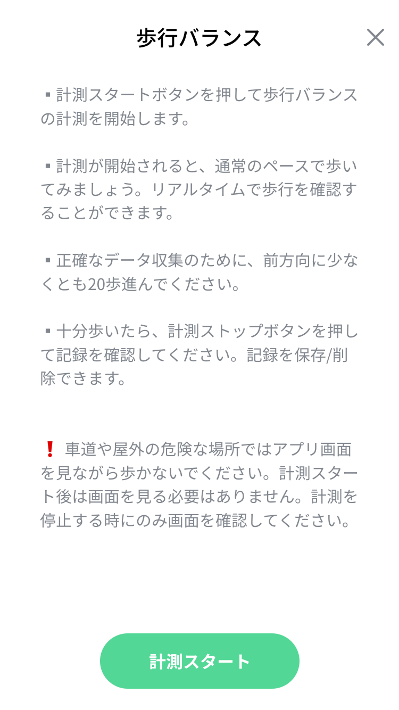
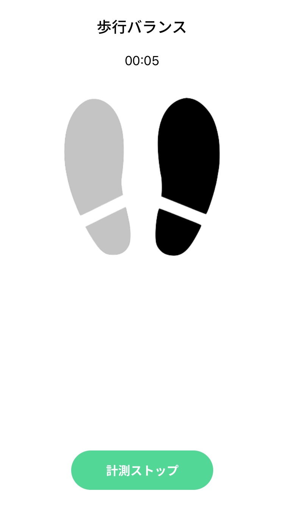
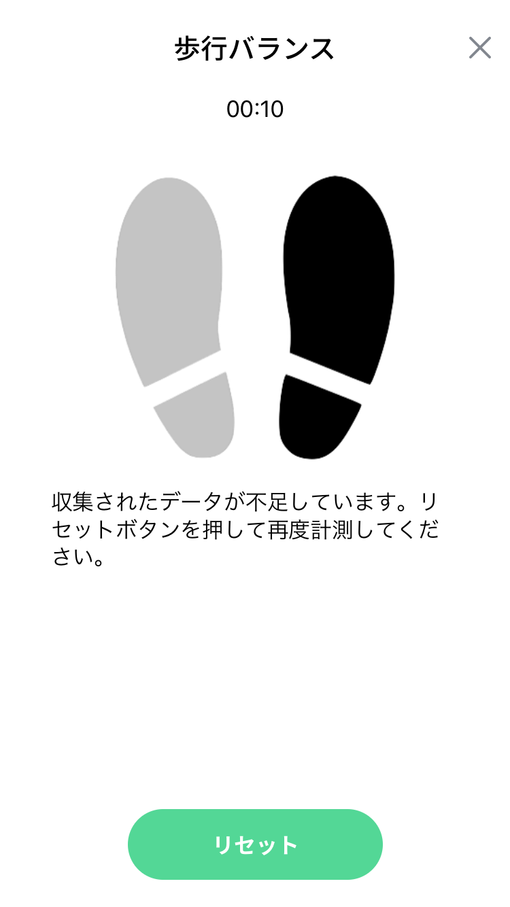
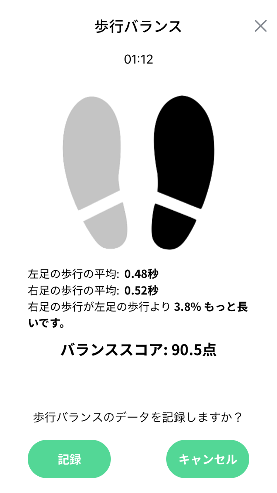

|
歩行バランス

- 歩行バランス開始画面です。
- 「計測スタート」ボタンを押すと、測定が開始されます。
- 説明および注意事項を必ずお読みください。
歩行バランス 計測中

- 計測中の画面です。
- フロアに届く足によって、画像が変更されます。
- 20歩以上充分に歩いたと思ったら、「計測ストップ」ボタンを押してください。
歩数不足

- 歩数不足した場合に表示される画面です。
- 「リセット」ボタンを押して再度計測してください。
- もっと歩いた後に「計測ストップ」ボタンを押してください。
計測結果

- 計測結果画面です。
- 左足と右足の歩行平均の時間を確認することができます。
- 「記録」ボタンを押すと、データが保存され、歩行統計画面に表示されます。
- 「キャンセル」ボタンを押すと、データを保存しません。
|